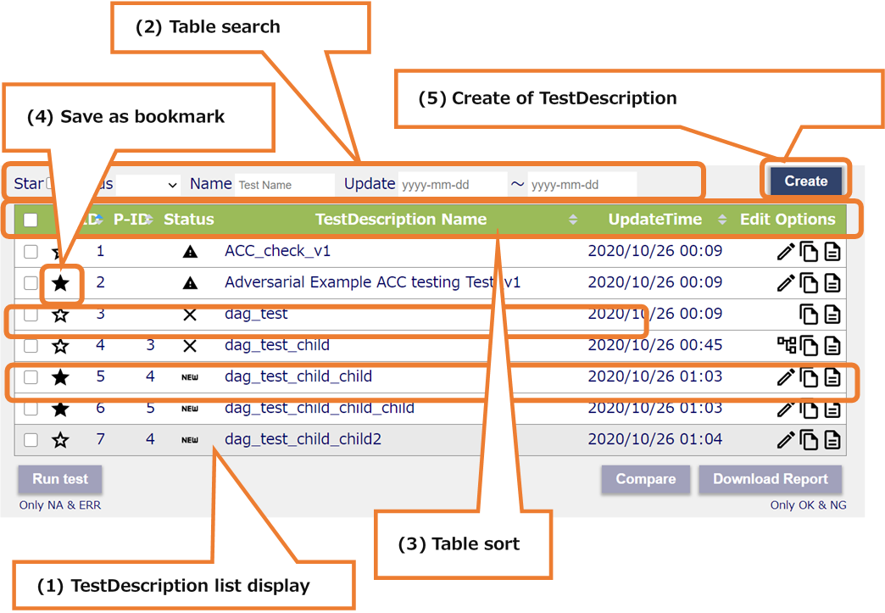
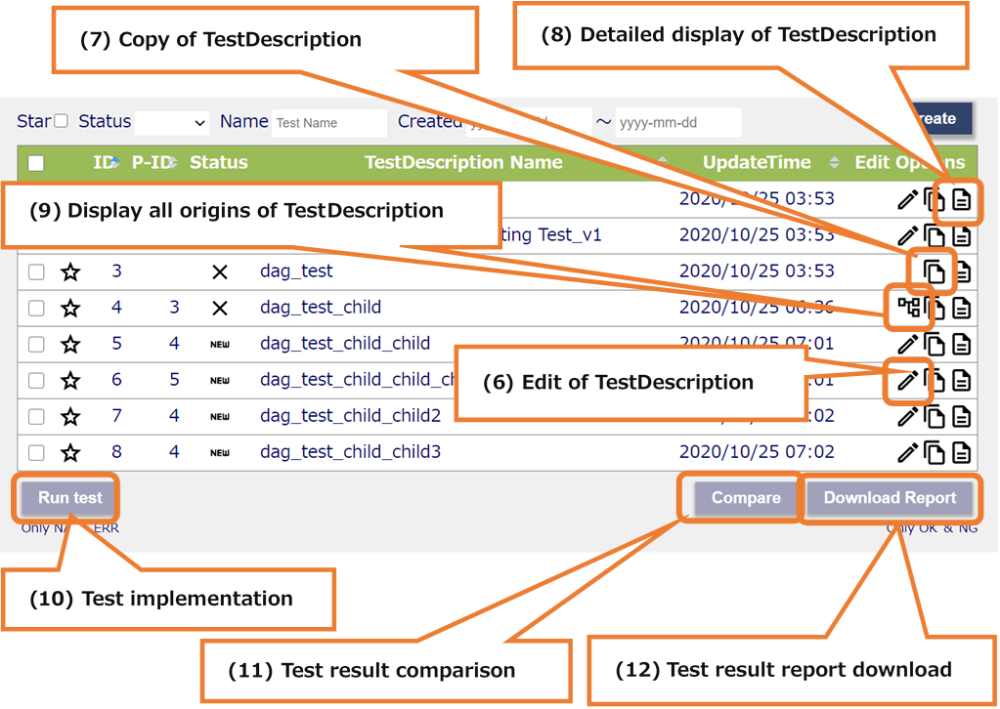
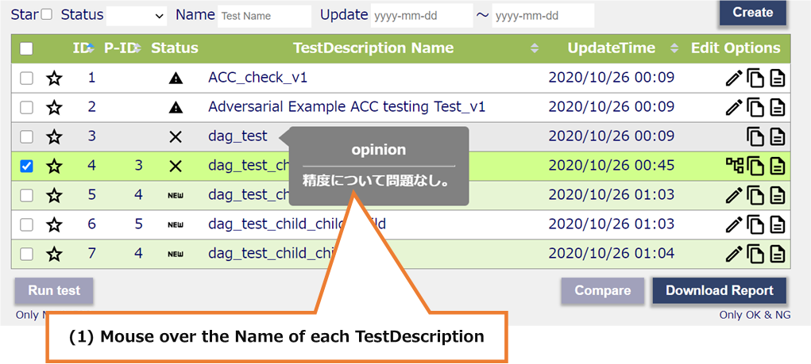
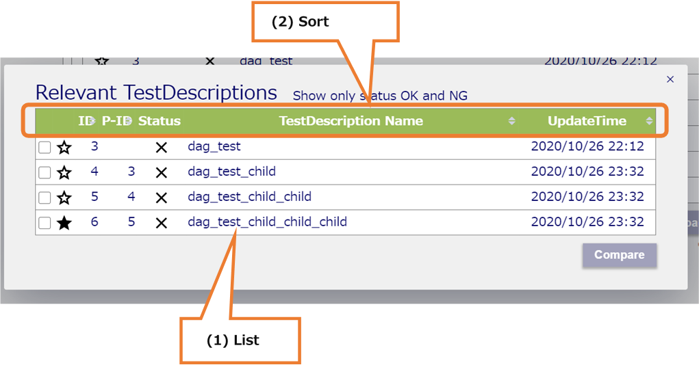
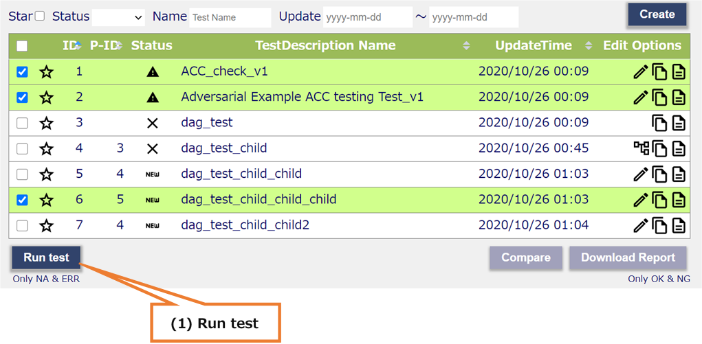
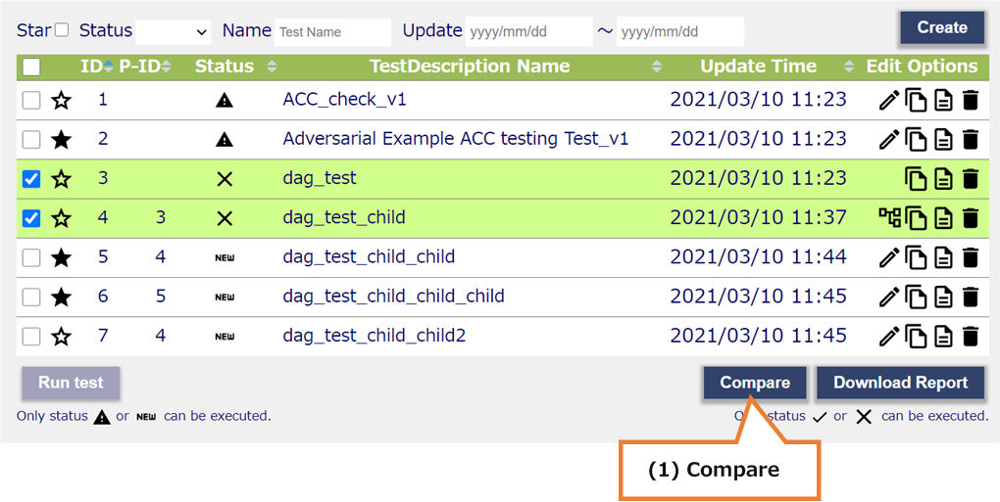
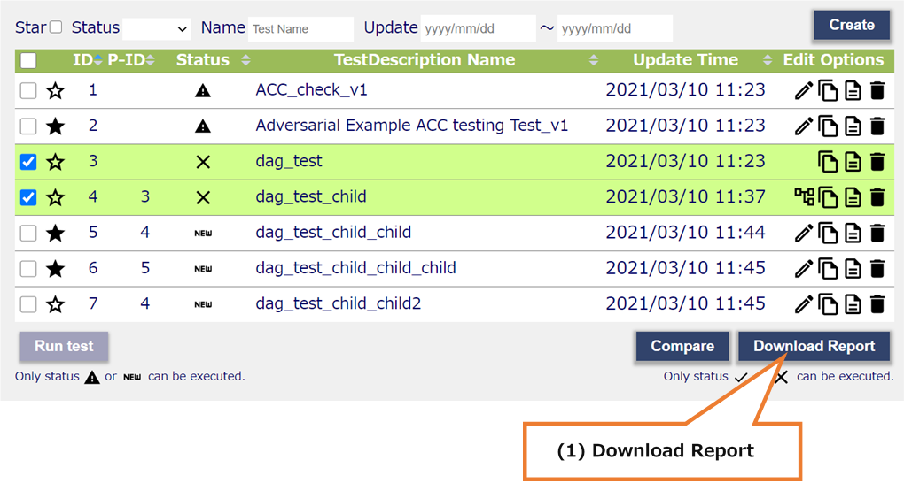

4.1. TestDescriptions¶
Screen that displays all TestDescriptions associated with the MLComponent selected on the MLComponent screen.
4.1.1. All areas¶
All areas

(1) Submenu area
a. Sign-in Information Display
b. Language Switching (Japanese / English)
c. Inventories
d. MLComponents
e. Sign-out
(2) Header area
a. Display the MLComponent name selected on the MLComponents screen
(3) Main area
a. TestDescription list display
b. Table search
c. Table sort
d. Save as bookmark
e. Create of TestDescription
f. Edit of TestDescription
g. Copy of TestDescription
h. Detailed display of TestDescription
i. Display all origins of TestDescription
j. Test implementation
k. Test result comparison
l. Test result report download
Main areas

(1) TestDescription list display
Display of all of TsetDescription that have been created.
Displaying TestDescription information.
(* See details 4.1.2)
(2) Table search
Search in real-time for each item.
(3) Table sort
When you press the column name of the table, the pressed column name is sorted.
(4) Save as bookmark
You can register and cancel favorites by pressing the icon.
(5) Create of TestDescription
Press the button to move to the Test Description creation screen.

(6) Edit of TestDescription
Press the icon to move to the edit screen.
(7) Copy of TestDescription
Press the icon to switch to the copy screen.
(8) Detailed display of TestDescription
You can register and cancel favorites by pressing the icon.
(9) Relevant TestDescription
When you press the icon, a modal that displays the copy source is displayed.
(* See details 4.1.3)
(10) Test implementation
When you press the button, the checked TestDescription test is executed.
(* See details 4.1.4)
(11) Test result comparison
When you press the button, the compare the results of two TestDescription check.
(* See details 4.1.5)
(12) Test result report download
When the user presses the button, the download the results report of TestDescription checked.
(* See details 4.1.6)
4.1.2. TestDescription list display¶
TestDescription list display

(1) Mouse over the Name of each TestDescription
Opinion is displayed
Not displayed if there is no Opinion information
(2) Check one Test Description
The background color of the following Test Description changes
a. A copy source of the selected TestDescription
b. A copy of the selected TestDescription
c. A copy of the same TestDescription as the selected TestDescription
4.1.3. Relevant TestDescription¶
Relevant TestDescription

(1) List
All copy sources of the Test Description selected on the TestDescriptions screen are displayed.
However, the test execution results of NA and ERR are not displayed.
(2) Sort
When you press the column name of the table, the pressed column name is sorted.

(3) Compare
If you select two Test Descriptions, you will be able to press the button.
When you press the button, transition to TestDescription comparison screen.
4.1.4. Test implementation¶
Test implementation

(1) Run test
A test can be performed when Test Description with Status NA and ERR is selected.
(Multiple selections are possible)
4.1.5. Test result comparison¶
Test result comparison

(1) Compare
Can be pressed when the following three conditions are met
a. Select Test Description with Status OK or NG
b. Two Test Descriptions selected
c. Two Test Descriptions satisfy the following relationship
The original TestDescription and the copied TestDescription
Both are copying the same Test Description
4.1.6. Test result report download¶
Test result report download

(1) Download Report
You can download the test result report when Test Description with Status OK or NG is selected.
(Multiple selections are possible)